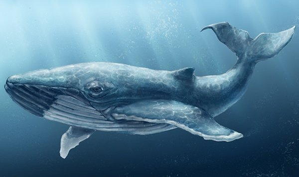
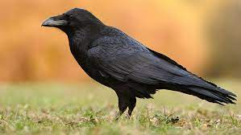

Найбільша тварина в світі
Найбільша тварина в світі це кит. Найбільший розмір має вид синіх китів. Середній розмір синього кита 25 метрів. Максимальний розмір кита був 36 метрів , це рекорд в світі тварин! Кити є травоїдними тваринами и зараз китів залишилося всього в світі 25 тисяч . Їх залиштлося дуже маленька кількість та через діяльність людей.
Дуже розумний Птах
Коли ви чуєте слово птах який птах вам приходить в голову? Якась кількість людей може сказат ворона та скоріш за всього вони не будуть знати що Ворона має ентилкет як у 7 літньої дитини . Це приблизно ворони умнищі за 10 мільйонів людей з яких 9 мільйонів дитей та 1 мільйон дорослих. Також ворона це одна з най умніших тварин в свиті . Ще дуже розумними тваринами є дельфіни,слони,тигри,Кити,шимпанзе.